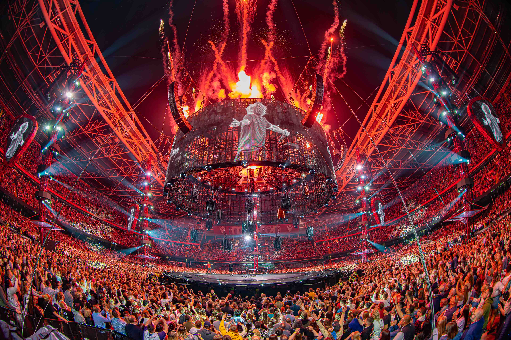
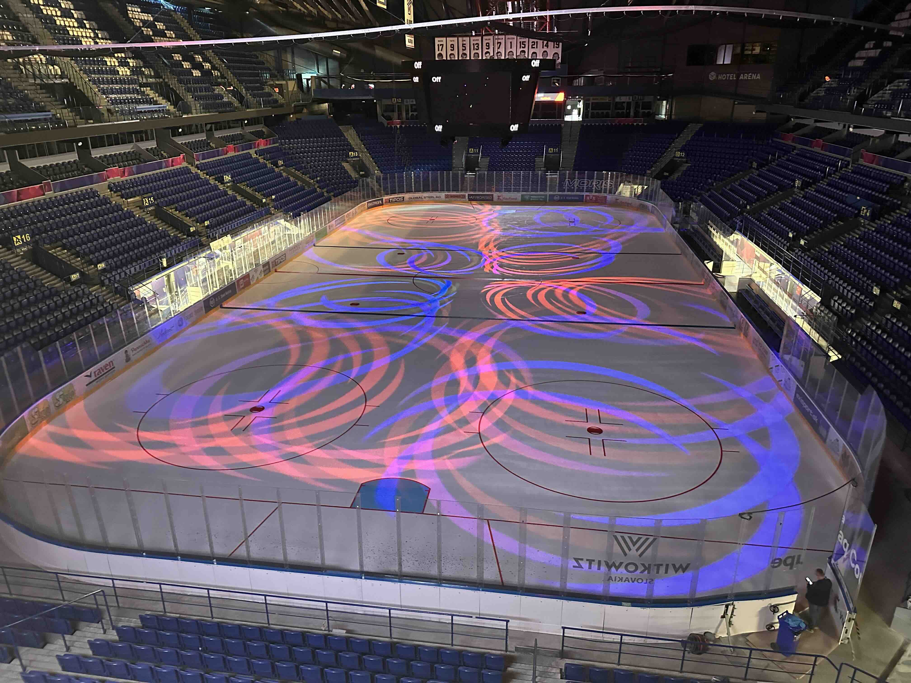

Reálné chování při úzké šířce. Band se přeskládá do jednoho sloupce a fotka jde NAD text — nezávisle na tom, na které straně je na desktopu (oba příklady níže to ukazují). Rámy jsou scrollovatelné jako telefon.

▢ AYRTON ▦ Ed Sheeran · Cardiff
▢ AYRTON DOMINO ▦ Steel Aréna Košice